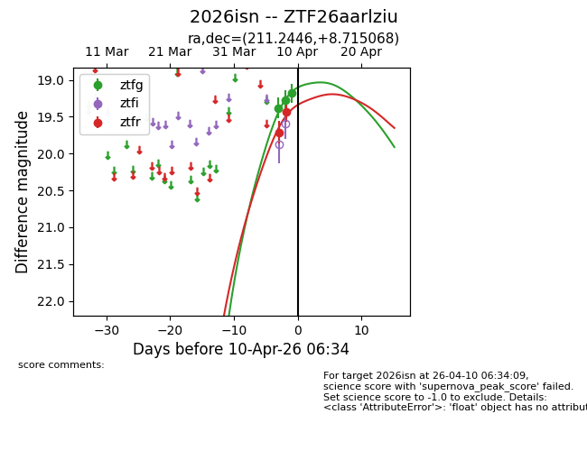
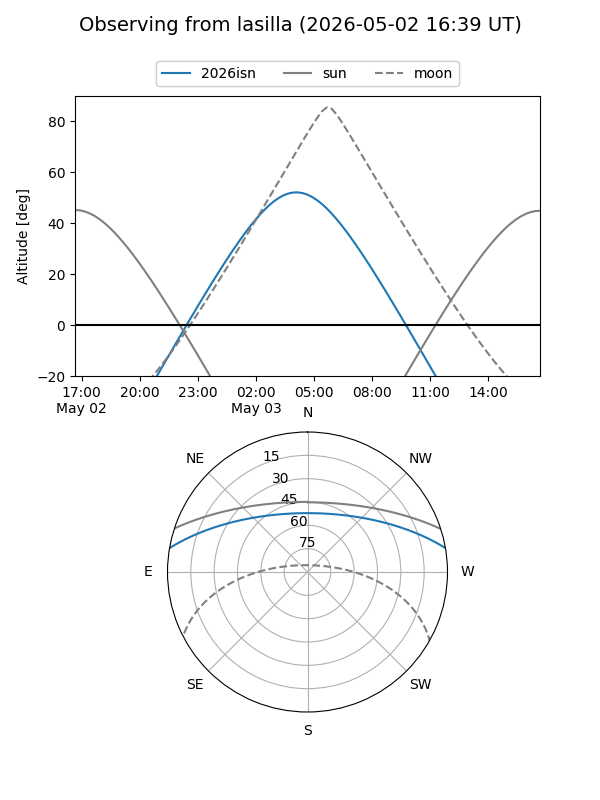
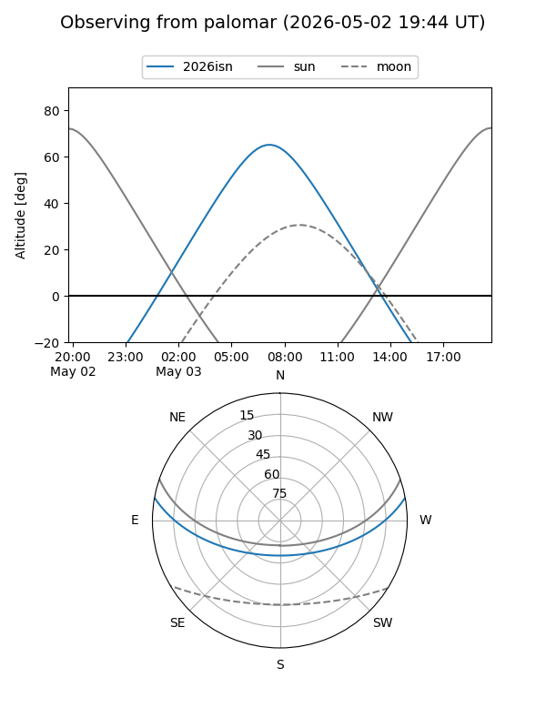
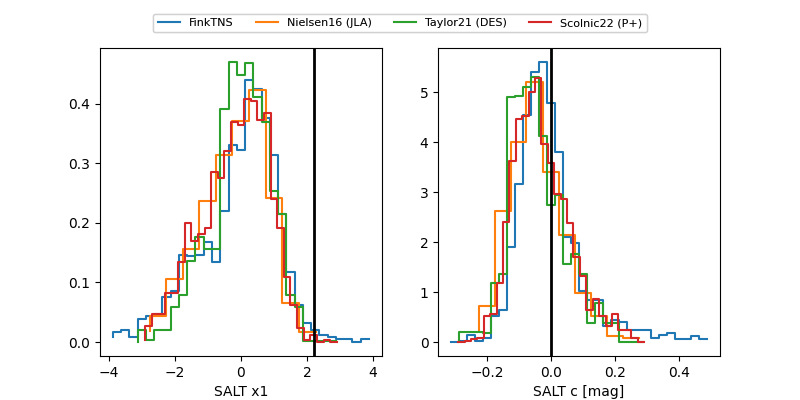

2026isn
Target 2026isn at 2026-04-10 06:43
Aliases and brokers:
FINK: link
Lasair: link
ALeRCE: link
TNS: link
YSE: link
alt names
ZTF26aarlziu (ztf,fink_ztf)
2026isn (tns,yse)
Coordinates:
equatorial (ra, dec) = 211.2446,+8.71507
equatorial (HMS+DMS) = 14:04:58.70,+08:42:54.25
galactic (l, b) = (349.7222,+64.67569)
Flags:
Photometry:
last ztfg=19.18, ztfr=19.44
3 ztfg, 2 ztfr detections
Lightcurve

Visibility


Additional plots
